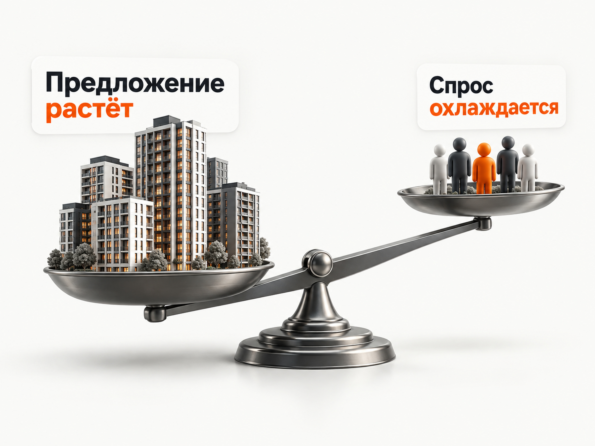

Блог о платном трафике
Продвижение новостроек в 2026 году: инструкция и прогноз для застройщика
Продвигать новостройки в 2026 году сложнее, чем несколько лет назад. Покупатель дольше принимает решение, сильнее зависит от условий ипотеки, сравнивает больше объектов и гораздо внимательнее считает ежемесячный платёж.
При этом продажи не остановились. За январь-август 2026 года в России было продано 14,6 млн м² жилья в новостройках, что на 2% больше аналогичного периода 2025 года. Но рост обеспечили в основном всплески спроса в январе и июне. В августе продажи уже оказались на 16% ниже прошлогодних.
Поэтому задача рекламы сейчас не в том, чтобы просто собрать как можно больше заявок. Нужно находить людей, которым подходит конкретный ЖК по цене, локации, сроку сдачи и способу покупки, а затем передавать рекламным алгоритмам информацию о качестве этих обращений.
Для застройщика я бы в первую очередь рассматривал Яндекс Директ. Он позволяет одновременно работать с уже сформированным спросом на Поиске и расширять аудиторию через РСЯ, ретаргетинг и автоматические форматы.
Что происходит на рынке новостроек в 2026 году
Рынок нельзя описать одним словом «падение». По итогам первых восьми месяцев продажи по площади остаются немного выше 2025 года, но последние месяцы показывают охлаждение.
В августе 2026 года застройщики продали 1,8 млн м² жилья, на 16% меньше год к году. Особенно заметно спрос снизился на крупных рынках. Например, в Москве августовские продажи упали на 41% год к году.
Одновременно растёт давление предложения. По данным ЕРЗ, с июля 2024 года по июль 2026 года накопленная разница между выводом новых квартир на рынок и их продажами достигла 325 274 квартир. Только во втором квартале 2026 года застройщики вывели 184 874 квартиры, а продали 161 936.
Доступность обычной ипотеки тоже остаётся ограничением. На 16 сентября 2026 года ключевая ставка Банка России составляет 14%.
Это меняет маркетинг застройщика. Несколько лет назад хороший объект мог относительно легко продаваться на растущем рынке. Сейчас слабый оффер нельзя компенсировать увеличением рекламного бюджета.
Если соседний ЖК предлагает сопоставимую квартиру с меньшим первым взносом, удобной рассрочкой или более понятным ежемесячным платежом, реклама быстро покажет эту разницу через стоимость квалифицированного лида.

Продвижение новостроек нужно начинать не с рекламы
Перед запуском я бы сначала ответил на четыре вопроса:
- Почему покупатель должен выбрать именно этот ЖК?
- Какая квартира или группа квартир сейчас является приоритетной для продажи?
- Каким способом покупатель реально может оплатить покупку?
- Какую стоимость продажи застройщик может позволить себе в рекламе?
В 2026 году «квартиры от застройщика» или «современный жилой комплекс» практически ничего не объясняют.
Нужна конкретика:
- цена квартиры;
- первоначальный взнос;
- ежемесячный платёж;
- рассрочка;
- подходящая ипотечная программа;
- срок сдачи;
- готовность дома;
- планировка;
- инфраструктура и транспортная доступность.
Причём рекламировать весь ассортимент одинаково обычно не нужно. У застройщика практически всегда есть квартиры, которые продаются легче, и остатки, которым требуется отдельный оффер.
Яндекс Директ для застройщика
Яндекс Директ я бы сделал основой платного продвижения новостройки.
Причина простая: на Поиске можно работать с человеком в момент, когда он уже ищет квартиру.
Запросы могут быть очень горячими:
- «купить квартиру в новостройке Казань»;
- «новостройки рядом с метро...»;
- «двухкомнатная квартира от застройщика»;
- «семейная ипотека новостройка»;
- «ЖК название цены»;
- «название конкурирующего ЖК».
Но ограничиваться только такими запросами нельзя. Объём точного сформированного спроса конечен.
Поэтому нормальная структура продвижения обычно включает Поиск, РСЯ, ретаргетинг и дополнительные автоматические форматы.
Поиск Яндекса
Я бы разделял поисковый спрос минимум по смыслу.
- брендовый спрос по названию застройщика и ЖК;
- локальный спрос по району, метро, улице или части города;
- общий коммерческий спрос: купить квартиру, новостройка от застройщика, квартира в новом доме;
- продуктовый спрос: студия, однокомнатная, семейная квартира, квартира с отделкой, готовая квартира;
- финансовый спрос: ипотека, рассрочка, первоначальный взнос и другие условия покупки, которые действительно доступны у конкретного застройщика.
После запуска обязательно нужно регулярно смотреть реальные поисковые запросы, потому что около недвижимости много смежного спроса:
- аренда;
- вторичка;
- работа;
- отзывы;
- ремонт;
- дизайн;
- объявления собственников;
- информационные запросы.
Подробнее о работе с исключениями я писал в статье про минус-фразы в Яндекс Директе.
РСЯ
РСЯ нужна уже не только для человека, который прямо сейчас написал «купить квартиру».
Можно работать с пользователями, которые изучают недвижимость, ипотеку, конкретные районы и конкурирующие жилые комплексы, а также возвращать посетителей собственного сайта.
В недвижимости это особенно полезно из-за длинного цикла принятия решения. Человек может первый раз зайти на сайт сегодня, посмотреть планировки, через неделю изучить конкурентов, а заявку оставить значительно позже.
Поэтому я бы обязательно выделял отдельный ретаргетинг на аудитории, которые уже смотрели квартиры, цены, условия ипотеки или несколько раз возвращались на сайт.
Подробнее о механике есть в материале что такое РСЯ.
Специальные размещения для недвижимости
У Яндекса есть отдельные тематические размещения недвижимости на поиске. Продвигать через них можно жилые комплексы с проектной декларацией. Объявления показываются людям, которые уже находятся на этапе поиска недвижимости, а модель оплаты предусматривает оплату за целевые звонки.
Для застройщика такой формат имеет смысл тестировать отдельно от обычных рекламных кампаний и сравнивать именно стоимость целевого обращения.
Как рекламировать несколько ЖК одновременно
Одна из частых ошибок - свалить все объекты в одну общую статистику.
Допустим, один ЖК получает заявки по 2 000 ₽, второй по 4 000 ₽, третий по 15 000 ₽. Средний CPL аккаунта может выглядеть приемлемо, хотя один объект фактически не продаётся через рекламу.
Поэтому аналитику нужно вести минимум на уровне отдельного ЖК.
Это хорошо видно и в моём старом кейсе по продаже студий в Москве. Средняя стоимость заявки составляла 528 ₽, но по отдельным объектам разброс был от 300 до 5 000 ₽. Звонок в среднем стоил 2 771 ₽. Эти цифры относятся к старому периоду и не являются ориентиром для рынка 2026 года, но сам принцип остаётся актуальным: привлекательность объекта влияет на рекламу сильнее, чем средняя статистика кабинета.
При этом я бы не дробил структуру до десятков микрокампаний, если каждый сегмент получает несколько конверсий в месяц. Алгоритмам нужны данные.
Нужно разделить объекты для контроля экономики, но сохранить достаточный объём конверсий для обучения стратегии.
Какой сайт нужен для рекламы новостройки
Для рекламного трафика недостаточно красивого корпоративного сайта застройщика.
Человек должен за несколько секунд понять:
- что продаётся;
- где находится объект;
- сколько стоит квартира;
- какие планировки доступны;
- когда сдаётся дом;
- какие способы покупки доступны.
Особенно важна возможность сразу посмотреть реальные квартиры.
Каталог с фильтрами по комнатности, площади, этажу, стоимости и сроку сдачи обычно полезнее длинного рассказа об архитектурной концепции проекта.
Цена тоже не должна быть спрятана за формой «узнать стоимость». В недвижимости человек сравнивает несколько объектов одновременно. Если конкуренты показывают цены, а один застройщик заставляет оставлять телефон ради базовой информации, часть аудитории просто уйдёт.
Форма должна соответствовать странице. Вместо абстрактного «Оставить заявку» лучше предложить действие, которое человек действительно хочет совершить: получить подборку квартир, узнать расчёт платежа, записаться на просмотр или уточнить наличие конкретной планировки.
Оффер в рекламе новостройки
В текущем рынке особенно важен финансовый оффер.
Если у застройщика действительно есть подходящие программы, в рекламе можно тестировать:
- условия рассрочки;
- первоначальный взнос;
- ежемесячный платёж;
- семейную или другую доступную ипотечную программу;
- скидку на определённые квартиры;
- готовые квартиры;
- отделку;
- trade-in;
- специальные условия на остатки.
Не нужно одновременно помещать всё в одно объявление.
Лучше проверить несколько отдельных аргументов и посмотреть, какие из них приводят не самые дешёвые заявки, а лучших покупателей.
В 2026 году это особенно удобно делать через комбинаторные объявления ЕПК. В одно объявление можно передать несколько вариантов заголовков, текстов и изображений, после чего Директ комбинирует их при показах. Подробнее формат разобран в статье про комбинаторные объявления.
Аналитика важнее дешёвого CPL
В недвижимости легко получить красивую статистику и плохой результат.
Например:
- реклама принесла 100 заявок;
- CPL составляет 2 000 ₽;
- в отчёте всё выглядит отлично.
Но если из 100 обращений отдел продаж признал целевыми 20, реальная стоимость квалифицированного лида уже составляет 10 000 ₽.
Поэтому минимальная воронка для застройщика должна выглядеть так:
- реклама;
- обращение;
- квалифицированный лид;
- встреча или просмотр;
- бронь;
- сделка.
Звонки также обязательно нужно учитывать через коллтрекинг. В недвижимости человек часто звонит вместо заполнения формы.
Следующий уровень - передавать обратно в Метрику информацию из CRM. Например, создавать отдельные цели «Квалифицированный лид», «Назначен просмотр», «Бронь» или «Сделка».
Тогда можно увидеть, какие кампании приводят реальных покупателей, а не просто формы.
Подробно эта схема описана в статье про офлайн-конверсии в Яндекс Директе.
На какую цель оптимизировать рекламу
Сразу обучать кампанию на продажах квартиры обычно невозможно.
Допустим, отдельная рекламная кампания приводит две сделки в месяц. Для алгоритма это почти отсутствие данных.
У меня практический ориентир для конверсионной стратегии - примерно 15-20 целевых действий в неделю. Если более глубоких событий недостаточно, нужно искать промежуточную цель, которой уже достаточно для обучения.
Это может быть обычная заявка или квалифицированный лид.
Главный принцип - использовать максимально глубокое событие, по которому сохраняется достаточный объём статистики.
Если квалифицированных лидов уже много, логично постепенно переходить с оптимизации по любому обращению на качественный лид.
Какие результаты Яндекс Директа сейчас встречаются в новостройках
Единой «средней стоимости лида застройщика» не существует.
Регион, класс жилья, цена квартиры, стадия строительства, узнаваемость ЖК, условия ипотеки и качество посадочной могут менять результат в несколько раз.
Поэтому полезнее посмотреть на несколько конкретных кейсов.
В кейсе жилого комплекса в Сибири за январь-март 2026 года после переработки кампаний стоимость квалифицированного лида снизилась с 33 227 до 8 588 ₽. В феврале первичная конверсия стоила 2 314 ₽, но квалифицированными оказались около 27% обращений.
В другом опубликованном кейсе нового ЖК за январь-июнь 2026 года средняя цена заявки в мае-июне составляла 1 460 ₽. Самыми дешёвыми оказались поисковые кампании, связанные с ипотечными программами, около 1 020 ₽ за обращение.
Есть и кейс, опубликованный в январе 2026 года, где за контрольный период получили 253 обращения примерно по 1 479 ₽. Квалифицированными стали 124 обращения, а средняя стоимость квалифицированного лида составляла около 3 300 ₽.
Разница между этими результатами хорошо показывает проблему любых «средних по рынку».
Заявка за 1 500 ₽ и квалифицированный покупатель за 8 500 ₽ могут одновременно быть нормальным результатом двух разных проектов.
Мои кейсы по недвижимости
Из собственных проектов я бы использовал старые кейсы только для понимания механики, а не как прогноз цены лида на 2026 год.
В проекте по продаже студий в Москве одновременно продвигалось несколько ЖК. Средняя заявка с формы стоила 528 ₽, но между объектами CPL отличался более чем в десять раз. Именно поэтому статистику считали отдельно по каждому ЖК.
В другом проекте застройщик продавал коммерческие помещения в ЖК «Ватутинки Парк». Стоимость обращения удалось снизить примерно с 6 000 до 1 700 ₽. В одном из периодов из 12 обращений 10 были квалифицированными. Проект велся с 2023 по 2024 год, поэтому сами цифры сейчас использовать как прогноз тоже нельзя. Кейс коммерческой недвижимости.
Общий вывод из этих проектов не про конкретный CPL. Результат нужно считать по объектам и по качеству обращения, а алгоритмам нужно передавать достаточное количество нормальных сигналов.
Какой CPL закладывать в прогноз в 2026 году
Я бы не составлял медиаплан застройщика по обещанию «лиды по 1 500 ₽».
По свежим кейсам такой результат действительно встречается. Но встречается и квалифицированный лид за 8 000-9 000 ₽.
Для первоначального прогноза регионального проекта массового сегмента я бы скорее закладывал более осторожный диапазон:
- 3 000-5 000 ₽ за первичное обращение.
- Для квалифицированного лида - примерно 7 000-12 000 ₽.
Это не средняя цена лида по российскому рынку. Это расчётный диапазон, который я бы использовал до получения собственной статистики проекта.
В Москве, Санкт-Петербурге, премиальном сегменте или при слабом предложении фактическая цена может быть заметно выше.
После первых недель прогноз нужно заменить реальными данными конкретного ЖК.
Пример прогноза рекламного бюджета
Предположим, застройщик готов выделить на Яндекс Директ 300 000 ₽ в месяц.
При стоимости первичного обращения 3 000-5 000 ₽ получаем:
| Показатель | Расчёт |
|---|---|
| Рекламный бюджет | 300 000 ₽ |
| Расчётный CPL | 3 000-5 000 ₽ |
| Первичные обращения | примерно 60-100 |
| Квалификация 35-55% | примерно 21-55 квалифицированных лидов |
| Расчётный CPL квалифицированного лида | примерно 5 500-14 300 ₽ |
Доля квалифицированных лидов в этой таблице - сценарная гипотеза, а не статистика рынка.
Продажи я бы здесь вообще не прогнозировал через условные «средние 5%» или «10%».
У застройщика уже должна быть собственная CRM. Если отдел продаж знает реальную конверсию квалифицированного обращения в сделку, прогноз становится значительно точнее.
Например, если 8% квалифицированных лидов исторически превращаются в покупателя, нужно применять именно эти 8%, а не искать среднюю конверсию недвижимости в интернете.
О том, почему универсальной нормы здесь нет, есть отдельный материал про конверсию лида в продажу.
Как рассчитать допустимую цену лида от экономики сделки
Ещё лучше идти в обратную сторону.
Предположим, застройщик определил, что может потратить на привлечение одного покупателя максимум 150 000 ₽.
- Если из квалифицированных лидов покупает 7%, допустимая стоимость квалифицированного лида - 150 000 × 7% = 10 500 ₽.
- Если квалифицированными оказываются 45% первичных обращений, допустимый CPL обычной заявки - 10 500 × 45% = 4 725 ₽.
Вот уже нормальный ориентир для рекламы.
Не абстрактное «у конкурентов лид стоит 2 000 ₽», а цена, при которой конкретный проект способен зарабатывать.
Для оценки объёма поискового трафика дополнительно можно использовать инструмент Яндекса и методику из статьи как рассчитать прогноз бюджета Яндекс Директ.
С какого бюджета начинать
Фиксированной минимальной суммы для новостроек нет.
Если расчётная заявка стоит 4 000 ₽, бюджет в 40 000 ₽ даст около десяти обращений за месяц. На таком объёме трудно нормально сравнивать аудитории, объявления и стратегии.
Поэтому стартовый бюджет я бы рассчитывал от количества конверсий, необходимых для накопления статистики.
Если ориентироваться хотя бы на 50-80 первичных обращений в месяц и прогнозный CPL 3 000-5 000 ₽, получаем примерно 150 000-400 000 ₽ рекламного бюджета в месяц.
Для крупного города и нескольких ЖК бюджет может быть значительно выше.
Это не означает, что деньги нужно обязательно потратить. Бюджет масштабируется только после того, как реклама показывает приемлемую стоимость квалифицированного лида.
Что ещё использовать кроме Яндекс Директа
Директ не должен быть единственным источником продаж.
Для застройщика имеют смысл площадки недвижимости, органический поиск, собственная база, работа с повторными посетителями и другие каналы, которые уже доказали эффективность конкретного проекта.
Но если нужно выбрать один платный инструмент для первого теста, я бы начинал именно с Яндекс Директа.
Он позволяет сначала забрать существующий горячий спрос, а затем постепенно расширять охват и при этом контролировать результат через Метрику, CRM и офлайн-конверсии.
Требования к рекламе новостроек
Новостройки относятся к регулируемой рекламной тематике.
Для продвижения долевого строительства Яндексу нужны данные о юридическом лице застройщика и ссылка на проектную декларацию в ЕИСЖС.
В текстовых объявлениях необходимое предупреждение Директ может формировать автоматически. В графических объявлениях ЕПК, видео и медийных креативах предупреждение нужно добавлять самостоятельно.
Это нужно учитывать ещё до подготовки креативов, иначе рекламная кампания может упереться в модерацию уже после запуска.
Пошаговая схема продвижения новостройки
Я бы строил работу в таком порядке:
- экономика проекта и допустимая стоимость покупателя;
- отдельная аналитика по каждому ЖК;
- подготовка посадочных страниц и CRM;
- Поиск и РСЯ;
- передача квалифицированных лидов обратно в Метрику;
- масштабирование.
Главная ошибка - начинать с бюджета.
Если предложение проигрывает конкурентам, сайт плохо показывает квартиры, звонки не отслеживаются, а отдел продаж не сообщает качество лидов, дополнительные деньги просто ускорят расход.
В 2026 году продвижение застройщика всё сильнее становится системой обратной связи между рекламой и продажами.
Директ должен знать не только, кто заполнил форму, но и кто действительно подходит застройщику.
Итог
Рынок новостроек в 2026 году сложный, но спрос никуда не исчез.
За восемь месяцев объём продаж по России остаётся немного выше прошлогоднего, хотя последние месяцы показывают заметное охлаждение. Одновременно высокая стоимость финансирования и растущее предложение заставляют застройщиков сильнее конкурировать за реального покупателя.
Поэтому я бы не пытался найти магический канал с самыми дешёвыми заявками.
Для застройщика я бы строил систему вокруг Яндекс Директа, сайта с конкретным предложением, коллтрекинга, CRM и передачи квалифицированных лидов обратно в рекламную систему.
При первоначальном прогнозе можно ориентироваться примерно на 3 000-5 000 ₽ за первичное обращение и 7 000-12 000 ₽ за квалифицированный лид, но уже после запуска эти ориентиры нужно заменить реальной экономикой конкретного ЖК.
Если объект не продаётся даже после получения нормального объёма качественного трафика, проблема может быть уже не в рекламе, а в цене, условиях покупки, локации или самом продукте.
Я занимаюсь настройкой и ведением Яндекс Директа и работаю с рекламой недвижимости напрямую как специалист. Кейсы и условия работы собраны на naklikay.ru.